БЛОК ДВИГАТЕЛЯ > СНЯТИЕ |
| 1. СНИМИТЕ КАТУШКУ ЗАЖИГАНИЯ В СБОРЕ |
| 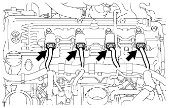 |
Отсоедините разъемы 4 катушек зажигания.
| 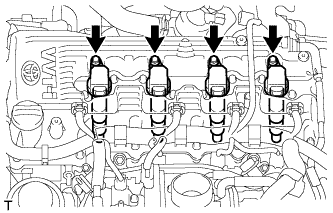 |
Выверните 4 болта и снимите 4 катушки зажигания.
| 2. СНИМИТЕ ГЕНЕРАТОР В СБОРЕ |
Для моделей с номинальным током 80 A:
Снимите генератор (Нажмите здесь).
Для моделей с номинальным током 100 A:
Снимите генератор (Нажмите здесь).
| 3. СНИМИТЕ ТЕПЛОЗАЩИТНЫЙ ЭКРАН ВЫПУСКНОГО КОЛЛЕКТОРА № 1 |
 |
Выверните 5 болта и снимите теплозащитный экран выпускного коллектора № 1.
| 4. СНИМИТЕ ВПУСКНОЙ ПАТРУБОК № 4 |
 |
Отверните 4 гайки и снимите впускной трубопровод № 4 и 2 прокладки.
| 5. СНИМИТЕ КЛАПАН ПЕРЕКЛЮЧЕНИЯ ПОДАЧИ ВОЗДУХА В СБОРЕ |
 |
Отсоедините разъем.
Отверните 2 гайки и снимите клапан переключения подачи воздуха.
Снимите теплозащитный экран выпускного коллектора № 1.
| 6. СНИМИТЕ ВЫПУСКНОЙ КОЛЛЕКТОР |
 |
Отверните 8 гаек и снимите выпускной коллектор.
Снимите прокладку.
| 7. СНИМИТЕ КОРПУС ДРОССЕЛЬНОЙ ЗАСЛОНКИ С ЭЛЕКТРОДВИГАТЕЛЕМ В СБОРЕ |
 |
Отсоедините перепускной шланг охлаждающей жидкости.
Отсоедините перепускной шланг охлаждающей жидкости № 2.
Отсоедините датчик положения дроссельной заслонки и разъем электродвигателя привода дроссельной заслонки.
| 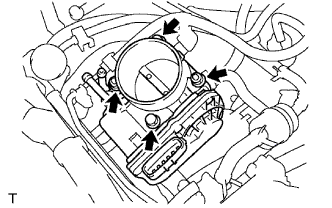 |
Выверните 2 болта, отверните 2 гайки и снимите корпус дроссельной заслонки с электродвигателем.
| 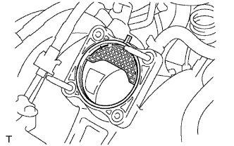 |
Снимите прокладку с впускного коллектора.
| 8. СНИМИТЕ ТОПЛИВНУЮ РАМПУ С ТОПЛИВНОЙ ФОРСУНКОЙ |
Снимите топливную рампу с топливной форсункой (Нажмите здесь).
| 9. СНИМИТЕ ЭЛЕКТРОВАКУУМНЫЙ КЛАПАН ПРОДУВКИ |
| 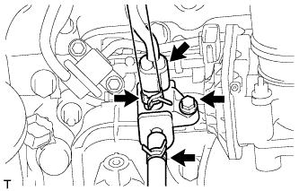 |
Отсоедините разъем электровакуумного клапана продувки (VSV).
Отсоедините 2 шланга продувки от электровакуумного клапана продувки.
Выверните болт и снимите электровакуумный клапан продувки.
| 10. СНИМИТЕ ВПУСКНОЙ КОЛЛЕКТОР |
| 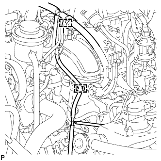 |
Для передней стороны двигателя:
Открепите 2 зажима жгута проводов от 2 кронштейнов зажимов.
| 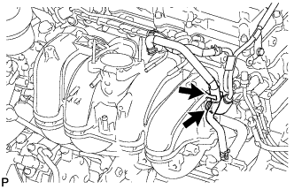 |
Для задней стороны двигателя:
Открепите перепускной шланг охлаждающей жидкости № 2 и отсоедините шланг вентиляции № 3 от впускного коллектора.
| 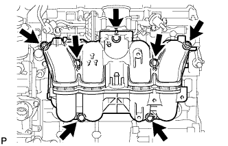 |
Выверните 5 болтов, отверните 2 гайки и снимите впускной коллектор.
Снимите прокладку с впускного коллектора.
| 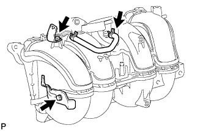 |
Выверните 2 болта и снимите 2 кронштейна зажимов жгута проводов и питающий шланг паров топлива № 2 с впускного коллектора.
| 11. СНИМИТЕ КРОНШТЕЙН КРЕПЛЕНИЯ КОМПРЕССОРА № 1 |
| 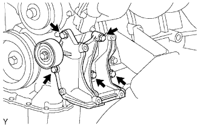 |
Отверните 5 болта и снимите кронштейн опоры компрессора.
| 12. СНИМИТЕ ОПОРНЫЙ РОЛИК № 1 В СБОРЕ |
 |
Выверните болт и снимите опорный ролик и распорную втулку.
| 13. СНИМИТЕ ПЕРЕПУСКНОЙ ШЛАНГ ОХЛАЖДАЮЩЕЙ ЖИДКОСТИ № 1 |
| 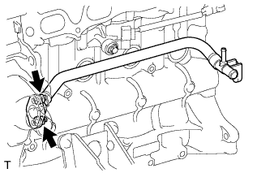 |
Отверните 2 гайки и снимите перепускной патрубок охлаждающей жидкости и прокладку.
| 14. СНИМИТЕ ТРУБКУ ЩУПА ПРОВЕРКИ УРОВНЯ МАСЛА |
Извлеките щуп проверки уровня масла.
| 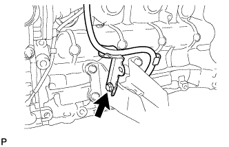 |
Выверните болт и снимите трубку щупа проверки уровня масла.
| 15. СНИМИТЕ ПОДУШКУ ПЕРЕДНЕЙ ОПОРЫ ДВИГАТЕЛЯ |
| 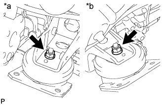 |
Отверните 2 гайки и снимите 2 подушки опоры двигателя.
| *a | Левая сторона |
| *b | Правая сторона |
| 16. СНИМИТЕ ЛЕВЫЙ КРОНШТЕЙН ПЕРЕДНЕЙ ОПОРЫ ДВИГАТЕЛЯ № 1 |
| 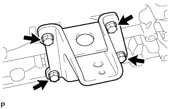 |
Выверните 4 болта и снимите кронштейн опоры двигателя.
| 17. СНИМИТЕ ПРАВЫЙ КРОНШТЕЙН ПЕРЕДНЕЙ ОПОРЫ ДВИГАТЕЛЯ № 1 |
| 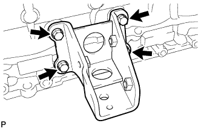 |
Выверните 4 болта и снимите кронштейн опоры двигателя.